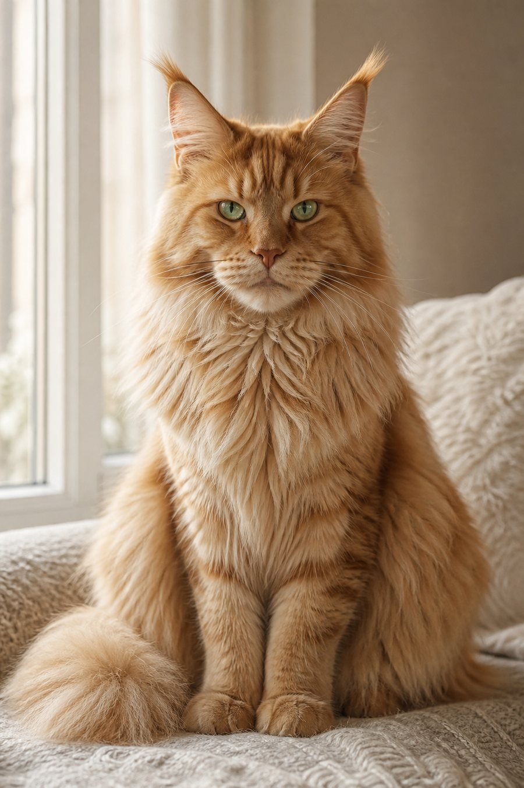

Промтзилла
Как превратить кота в человека онлайн с помощью ИИ
Загрузи фото кота — нейросеть сохранит цвет шерсти, взгляд, настроение и характер питомца, а затем создаст реалистичный портрет человека.
Пошаговая инструкция
- 1Выбери чёткое фото кота: морда, глаза, окрас и корпус должны быть хорошо видны.
- 2Загрузи фото в нейросеть для изображений онлайн.
- 3Скопируй промпт ниже и укажи, какого человека нужно получить: мужчину, женщину, подростка или пожилого человека.
- 4Попроси сохранить узнаваемые черты кота через цвет волос, глаза, выражение лица, позу, одежду и общее настроение.
- 5Если результат стал слишком фантазийным, добавь: «без кошачьих ушей, хвоста, усов и шерсти на лице».
- 6Сохрани лучший вариант и при необходимости попроси ИИ сделать образ более реалистичным или более сказочным.
Пример: до и после

ДоИсходное фото: рыжевато-кремовый кот с зелёными глазами и спокойным взглядом.
ПослеИИ превращает кота в человека: сохраняет рыжие волосы, зелёные глаза, мягкий свет и спокойный характер образа.
Промпт
РУ
Загружаю фото кота. Преврати этого кота в человека. Параметры результата: — человек: [мужчина / женщина / подросток / пожилой человек] — возраст: [примерный возраст] — стиль: [реалистичный портрет / модная съёмка / сказочный персонаж / кинообраз] — одежда: [какая одежда нужна] — фон: [какой фон нужен] Главная задача: человек должен выглядеть естественно, но в нём должны читаться черты исходного кота. Что сохранить от кота: — цвет шерсти передай через цвет волос, бровей, одежды и общую палитру — цвет и выражение глаз сохрани максимально узнаваемыми — настроение морды передай через взгляд, позу и мимику — если у кота пушистая шерсть, передай это через фактуру волос, ткани или воротника — если у кота есть характерные пятна или полосы, аккуратно отрази их в деталях одежды или причёски — сохрани общее впечатление: спокойный, важный, игривый, суровый, нежный или аристократичный образ Требования к изображению: — реалистичный вертикальный портрет человека — лицо и глаза хорошо видны — человек не должен выглядеть как косплей — не добавляй кошачьи уши, хвост, усы, лапы или шерсть на лице — не делай гибрид животного и человека — без текста, логотипов, водяных знаков и случайных символов — весь результат должен выглядеть как готовая качественная фотография
Теги
Эта страница подходит для работы онлайн: промпт можно использовать с ИИ и нейросетью, а поля в квадратных скобках заменить под своего питомца.